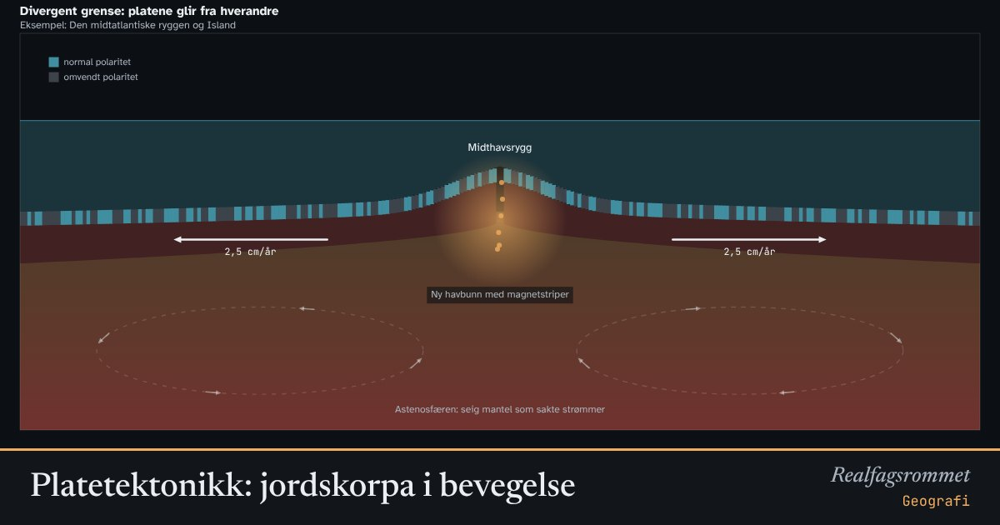

Platetektonikk: jordskorpa i bevegelse
Jordas ytterste lag er delt i stive plater som flyter på den seige mantelen under. Der platene glir fra hverandre, mot hverandre eller forbi hverandre, oppstår jordskjelv, vulkaner, fjellkjeder og nye hav.
Start animasjonen
Formler
Om animasjonen
Figurene er tverrsnitt gjennom jordskorpa og den øverste delen av mantelen, sterkt forenklet og ikke i riktig målestokk. Den stive litosfæren (skorpe og øverste mantel) flyter på den seige astenosfæren. Varme fra jordas indre driver langsomme strømmer i mantelen.
Divergent: Ny havbunn dannes der magma stiger opp i midthavsryggen. Når lava størkner, lagres retningen til jordas magnetfelt. Feltet har snudd mange ganger, så havbunnen får symmetriske striper på hver side av ryggen.
Subduksjon: Den tunge havplata dykker ned under den lettere kontinentplata. Jordskjelvene ligger dypere jo lenger inn under kontinentet de er. Vann fra plata gjør at mantelen smelter, og magmaen gir vulkaner.
Kollisjon: To kontinentplater er like lette og synker ikke. Skorpa presses sammen og foldes til høye fjell med en dyp fjellrot under.
Transform: Platene glir forbi hverandre. Friksjonen holder dem fast mens spenningen bygger seg opp, til de plutselig rykker. Da får vi et jordskjelv.
Prøv dette
- Atlanterhavet blir omtrent 2,5 cm bredere hvert år. Hvor mye bredere blir det i løpet av 80 år? Og på 10 millioner år?
- Hvorfor er magnetstripene på havbunnen symmetriske om midthavsryggen?
- Se på jordskjelvene ved subduksjon. Hvorfor ligger de dypeste lengst inn under kontinentet?
- Hvorfor har Island både vulkaner og jordskjelv, mens Norge har få av delene?
Kompetansemål
- Geografi: Platetektonikk, jordskjelv og vulkaner